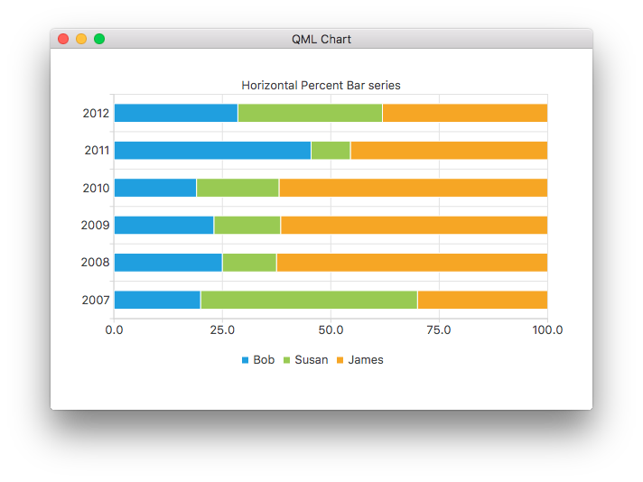

HorizontalPercentBarSeries QML Type
Presents a series of categorized data as a percentage of each category. More...
| Import Statement: | import QtCharts 2.7 |
| Instantiates: | QHorizontalPercentBarSeries |
| Inherits: |
Detailed Description
The data is drawn as a series of uniformly sized horizontally stacked bars, with one bar per category. Each bar set added to the series contributes a single segment to each stacked bar. The segment size corresponds to the percentage of the segment value compared with the total value of all segments in the stack. Bars with zero value are not drawn.
The following QML code snippet shows how to create a simple horizontal percent bar chart:
ChartView { title: "Horizontal Percent Bar Chart" anchors.fill: parent legend.alignment: Qt.AlignBottom antialiasing: true HorizontalPercentBarSeries { axisY: BarCategoryAxis { categories: ["2007", "2008", "2009", "2010", "2011", "2012" ] } BarSet { label: "Bob"; values: [2, 2, 3, 4, 5, 6] } BarSet { label: "Susan"; values: [5, 1, 2, 4, 1, 7] } BarSet { label: "James"; values: [3, 5, 8, 13, 5, 8] } } }
